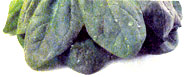
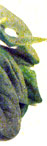
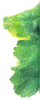
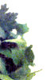

Garden For Essential Vitamins And Minerals
June/July 2000
| | Garden for Essential Vitamins and Minerals |  |
The following listing contains major plant sources of important vitamins and minerals. The information is approximate: It's impossible to assign an exact nutrient value to a crop, since growing and eating conditions vary widely. Not all the scientific test results agree, either. Nor does everyone agree that the government's RDA (Recommended Daily Allowance) of each vitamin and mineral is appropriate. The lists below are generally in descending order - the higher a food is in a list, the more of that nutrient it contains. Where I found specific values for certain crops, I added them in parentheses (figures refer to one cup of the food unless otherwise noted.) The abbreviations IU, mgs, and DGLVs stand for international units, milligrams and dark green leafy vegetables, respectively.
VITAMIN A, or carotene: Good for the skin; mucous membranes in mouth, urinary tract, and respiratory and digestive systems; and night vision. RDA: 5,000 IU.
Primary Sources: Carrots (one raw carrot= 7,930 IU; the Juwarot variety has the highest vitamin A content), sweet potatoes, most DGLVs (spinach = 14,850 IU), lamb's-quarters, dandelions, violet leaves, parsley, garden cress, butternut and hubbard squashes, pumpkins and cantaloupes.
VITAMIN B, or thiamine: Instrumental in the body's oxidation of carbohydrates and promotes health of nervous system, digestion and appetite. RDA: 1.2 to 1.5 mg.
Primary Sources: Sunflower seeds (2.84 mg), millet, turnip greens, dried peas and beans (pintos = 1.6 mg, others average 1.1 mg), sesame seeds, soybeans.
VITAMIN B2, or riboflavin: Essential for eyesight; promotes metabolism of lipids and tryptophan. RDA: 1.2 to 1. 7 mg.
Primary Sources: Sunflower seeds (3.3 mg), kidney bean sprouts, mushrooms, millet, DGLVs (collards =.38 mg, broccoli = .31 mg), dried beans and peas, amaranth and lamb's-quarters.
VITAMIN B3, or niacin.: Promotes health of skin tissue and nervous system and aids energy conversion. RDA: 14 to 19 mg.
Primary Sources: Peanuts (10 large peanuts = 3.1 mg), sunflower seeds, ginkgo nuts, wild rice, brown rice, broccoli, dried beans (navy beans = 5.8 mg), peas (3.7 mg), collards, mushrooms, whole wheat, barley and oats.
VITAMIN B6 or pyridoxine.: Helps in hemoglobin synthesis and in warding off anemia and dermatitis (including acne); may help prevent tooth decay and cancer. RDA: 1.8 to 2 mg.
Primary Sources: Dried beans (notably lentils and garbanzos), orange juice, brown rice, soybeans, bananas, kale, spinach, black-eyed peas, pigeon peas, potatoes (with skins), sunflower seeds, peanuts, parsley and whole grains.
VITAMIN C.: Prevents scurvy, reputed to help prevent colds and increase overall disease resistance (most animals synthesize their own supply). RDA: 50 to 60 mg.
Primary Sources: Violet leaves, rape, alfalfa, rose hips, hot chili peppers, broccoli, kale, turnip greens, cauliflower, parsley, brussels sprouts, watercress, honeydew melon, currants, blueberries.
VITAMIN E, or tocopherol: Reputed to help antibody production, heal burns and improve sexual function. RDA: 8 to 10 IU.
Primary Sources: Roasted peanuts, lima beans, sesame seeds, cabbage, asparagus, DGLVs, whole-grain rice and wheat, oats, sunflower seeds and sweet potatoes.
VITAMIN K.: Vital for blood clotting (and damaged by antibiotics). RDA: 50 to 140 micrograms.
Primary Sources: Spinach, cabbage, soybeans, cauliflower, tomatoes, carrots and peas.
FOLIC ACID: Vital to blood-forming process, cell replacement and for fetal growth (it's estimated one in three pregnant women is deficient in folic acid). RDA: 400 micrograms. Primary Sources: Soybeans, sunflower seeds, wheat germ and bran, pinto beans, watercress, garbanzos, spinach (0.5 lb = 463 micrograms), brussel sprouts, Romaine lettuce (1 cup chopped = 102 micrograms), mung beans, white beans (0.5 cup = 132 micrograms), kidney beans, lima beans, peanuts, pigeon peas, black-eyed peas, potatoes and orange juice.
PANTOTHENIC ACID: Helps the immune system, promotes antibody production, relieves intestinal bloating, and alleviates physical and emotional stress. RDA: 47 mg. Primary Sources: Sunflower seeds, fava beans, peanuts (3.5 ounces = 2.8 mg), soybeans, oats, pigeon peas, lentils, broccoli (one stalk raw broccoli = 1.8 mg), brussels sprouts, sweet potatoes, green peas, filberts, cashews and ginkgo nuts.
CALCIUM: Essential to muscles and the transmission of nervous impulses; vital part of bones and teeth. RDA: 800 to 1200 mg.
Primary Sources: Broccoli, dandelions, soybeans, rutabagas, sesame seeds, many seaweeds, sunflower seeds, bok choy (250 mg), fava beans, collards, kale (200 mg), mustard greens and okra (150 mg). Calcium levels are also high in spinach, chard, sorrel, beet greens, lamb's quarters, parsley, rhubarb and wheat bran, but calcium is poorly utilized in these foods because of their high oxalic acid content.
PHOSPHORUS: Also a vital part of bones and teeth. Phosphorus and calcium are the two major minerals in the body and work best when supplied in relatively even amounts (along with vitamin D). RDA: 800 to 1200 mg.
Primary Sources: Pumpkin and squash seed, sunflower seeds, millet, dried beans, lima beans, peas, corn, soybeans, wheat germ and bran, and DGLVs.
IRON: Vital to blood's proper functioning, as it's required for the exchange of oxygen in the metabolic process. RDA: 10 to 18 mg.
Primary Sources: Parsley, pumpkin and squash seeds, dried beans, millet, sesame, amaranth, pigeon peas, sunflower seeds, sorghum syrup, dark rye, wild rice, sunchokes and prune juice.
|
 |
 |
 |
|
 |
|
|